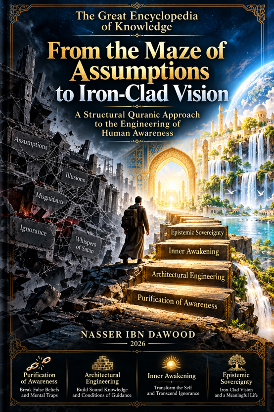

Nasser Ibn Dawood

Text extracted from the author-supplied Word edition; consult the original source.
Preparing the reader…
THE GREAT ENCYCLOPEDIA OF KNOWLEDGE
From the Maze of Assumptions to Iron-Clad Vision
A Structural Quranic Approach to the Engineering of Human Awareness
Condensed English Edition
A Conceptual Adaptation — Extraction of Essence
Nasser Ibn Dawood
2026
I. The Global Knowledge Manifesto
Knowledge is a universal right. The author firmly believes that wisdom should not be locked behind paywalls or language barriers.
Global Access Policy: All books in this library are available for free in multiple digital formats (PDF, HTML, DOCX, TXT).
The Digital Library: As of early 2026, the collection hosts 68 volumes (34 in Arabic and 34 in English), fully optimized for AI-assisted research and digital archiving.
Official Platforms:
Main Website: nasserhabitat.github.io/nasser-books/
GitHub: nasserhabitat/nasser-books
II. Translator’s Note: The Bridge of Meaning
This English edition is a condensed conceptual adaptation. It is not a word-for-word translation, but rather an “extraction of essence.” It presents the core philosophical framework in accessible English, omitting the exhaustive linguistic debates and classical references found in the original Arabic text.
For the academic researcher: The original Arabic version remains the primary source for comprehensive linguistic analysis, detailed exegesis (Tafsir), and the complete bibliography.
This edition therefore seeks to build a bridge rather than reproduce every stone of the original structure.
Arabic Quranic terms are sometimes retained when an English equivalent would reduce their conceptual range. The aim is not to impose a new translation of the Quran, but to introduce the reader to a particular method of structural contemplation developed within the author’s wider project on the Quranic Tongue and the Engineering of Revelation.
The conceptual interpretations presented here should accordingly be read as components of the author’s research model. They are invitations to investigation, comparison, testing, and reflection.
Introduction
The Crisis Is Not a Lack of Information
Humanity has entered an age of extraordinary access to information.
Never before have so many books, databases, scientific papers, images, opinions, interpretations, and competing explanations been available to so many people.
Yet access to information has not automatically produced clarity.
The modern human being may possess more data while becoming less certain about how to distinguish evidence from assumption, knowledge from repetition, truth from persuasion, and understanding from inherited belief.
The central problem addressed by this book is therefore not simply:
What do we know?
It is:
How does the human mind construct what it believes it knows?
This question moves the discussion from information to the architecture of awareness.
The Quran repeatedly contrasts knowledge and assumption, light and darkness, guidance and misguidance, seeing and blindness, remembrance and forgetfulness, purity and corruption.
This book reads these contrasts not merely as isolated moral descriptions, but as elements within an interconnected architecture of human consciousness.
The central journey may be represented as:
Assumption → Examination → Purification → Reconstruction → Discernment → Wisdom
Or, in the symbolic language of this book:
The Maze of Assumptions → Iron-Clad Vision
Part One
The Purification of Awareness
1. The Steps of Satan: How Cognitive Distortion Develops